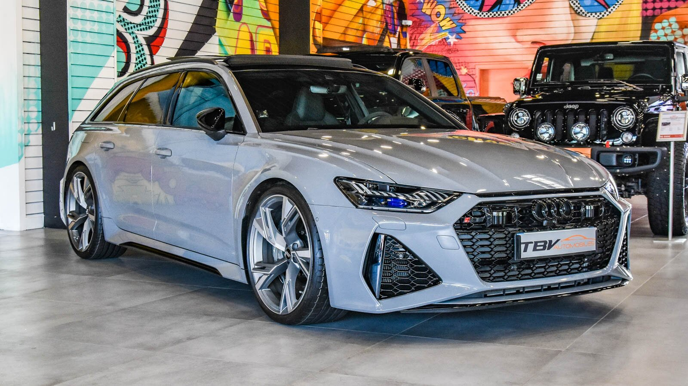
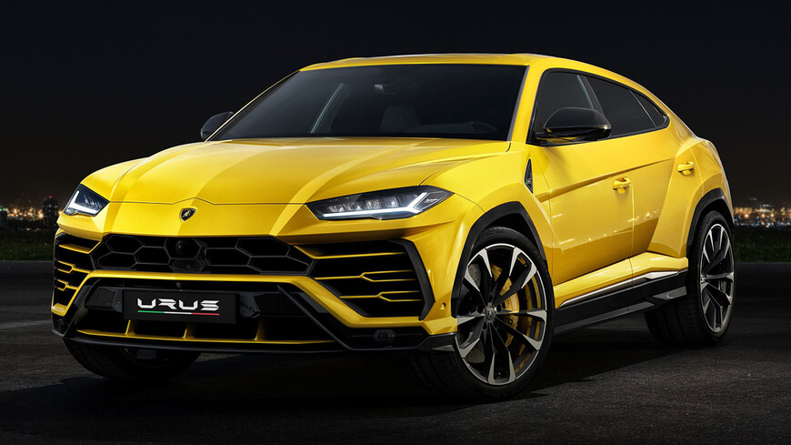

Bienvenue sur notre site de location de voitures
Découvrer le TOP 3 de nos véhicule

150€/h
Cette hypercar suédoise est sans doute l’une des autos modernes qui sera parmi les plus rares à dénicher. La Jesko de Koenigsegg, dévoilée en 2019, termine actuellement sa phase de développement lors d’une phase essais ultimes. Le constructeur d’Ängelholm lancera juste après, la production de 125 exemplaires de sa Jesko, notamment une version de préproduction, dans une livrée flashy "Tang Orange Pearl". Une livrée visant à rendre hommage à la célèbre Koenigsegg CCR Roadster, vêtue de cette même robe orange lors sa présentation en 2004 au Palexpo du Salon de Genève.

95€/h
première génération, l'Audi RS6 C5, est basée sur l'Audi A6 C5 et elle a été lancée à l'été 2002. L'Audi RS6 est disponible en version tricorps, quatre portes, et en version break, mais la version haut de gamme de la première génération, le RS6 Plus, n'était proposée qu'en version break (Avant). Elle est propulsée par un moteur essence V8 de 4,2 litres d'une puissance maximale de 331 kW (450 ch) et plus tard de 353 kW (480 ch) pour le RS6 Plus. La dernière RS6 C5 est sortie de la chaîne de montage fin 2004 et n'a été remplacée par la deuxième génération que près de quatre ans plus tard.

80€/h
La Lamborghini Urus est un SUV super-sportif et confortable combiné à un design agressif. Avec des traits finement étudiés, c’est le premier modèle SUV de la marque italienne, si on exclut le gros 4x4 (non un SUV) LM 002 sorti dans les années 1980. S’inspirant de la Porsche Cayenne et de l’Audi Q7, ce SUV italien se veut être le modèle sportif le plus convoité de l’année. Avec ses grandes performances sur toute piste et sa rapidité, il place la barre très haute.